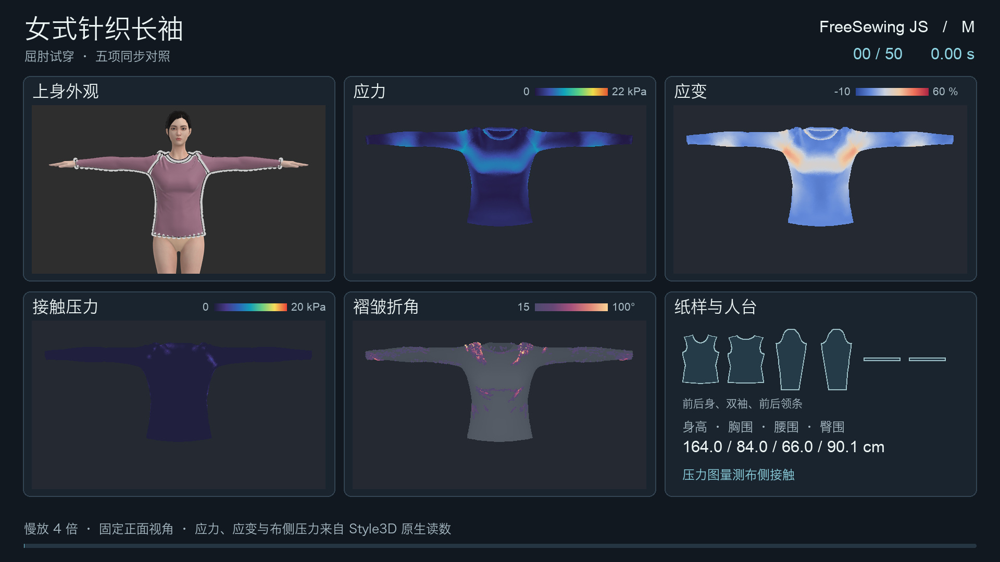
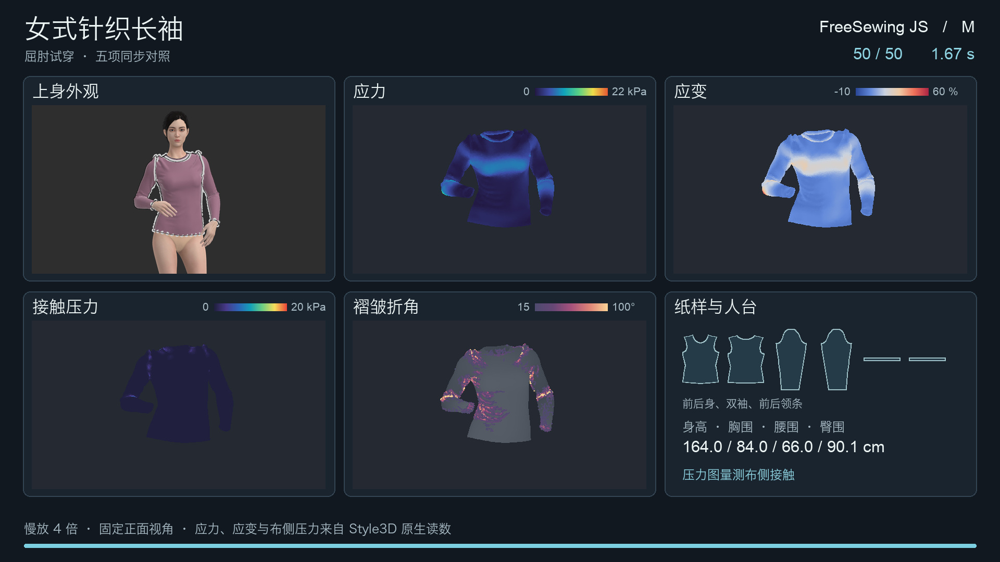

FreeSewing 女式针织 T 恤 M 码 · 五图试穿
用 M 码女体做平举到屈肘的对照。原动作从第 0 帧到第 50 帧，共 51 个状态。视频以四分之一速播放，起止均停留，便于同时观察上身、应力、应变、布侧接触压力和褶皱折角。
纸样和人台
选用现有的 FinishedFittedKnitTee 女式针织长袖设计，使用 FreeSewing JS 4.10.2 重新出样。六片为前身、后身、双袖和前后领条，设有 14 组缝合。新生成的 M 码 SVG、DXF 和裁片 JSON 均与先前用于该试穿工程的出样文件逐字节一致。FreeSewing JS 设计文档
人台使用 Style3D 内置 Female M 预设的实测量体。身高 164.0 cm、胸围 84.0 cm、腰围 66.0 cm、臀围 90.1 cm、肩宽 37.2 cm、臂长 53.5 cm、上臂围 24.3 cm、腕围 14.6 cm。工程沿用 Polyester Jersey 针织预设，克重 208.9 g/m²、厚度 0.52 mm。M 码 SVG 净线 · M 码 DXF 净线 · 量体、裁片和缝长

试穿画面


从原正面设计线稿和上身画面能看到相同的圆领、长袖及收腰轮廓。屈肘后，肘部和腰侧出现更明显的折线。第 25 帧五图


| 视频图层 | 来源与读法 |
|---|---|
| 上身外观 | Style3D 正面快照。观察领口、双袖和下摆。 |
| 应力 | 原生逐顶点标量，单位 kPa。固定色标 0–22 kPa。 |
| 应变 | 原生伸长比换算成相对静止长度的变化百分比。固定色标 −10% 至 60%。 |
| 布侧接触压力 | 原生 Pa 读数除以 1,000。固定色标 0–20 kPa。逐帧逐片核对原始样本数、顶点数和网格指纹。 |
| 褶皱折角 | 在同一衣片网格上复算相邻有效三角面的二面角，剔除边界、退化和非流形边。视频用正面深度近似过滤受遮挡的折线，显示 15° 以上的边。 |
末帧右袖是六片中应力、应变和折角各自 P95 最高的裁片，分别为 8.71 kPa、36.7% 和 51.7°。后领条的布侧压力 P95 最高，为 5.89 kPa，统计包含零值。布侧读数用于定位接触来源裁片。51 帧逐片统计与指纹
复验范围
连续模拟由 Boat 的 Style3D Studio 10.1.1077 完成。视频使用 SHA-256 核对一致的回放工程，在 macOS Style3D Studio 10.1.258 中重新逐帧取证。视频内的应力、应变和布侧压力逐帧使用相同的原生衣片几何。两个软件版本导出的逐帧网格哈希不同，视频中的读数以 macOS 采集为准。
人体侧压力接口在 51 帧均只返回 53,734 个原始样本，人台网格有 53,930 个顶点。人体侧目前只保留彩色叠层作定性定位，定量复验仍需样本与人体网格一致的读数，或同部位带单位的原生点测。本轮覆盖一个尺码和一段屈肘动作。第 50 帧人体侧原生叠层